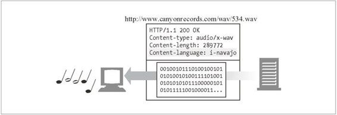
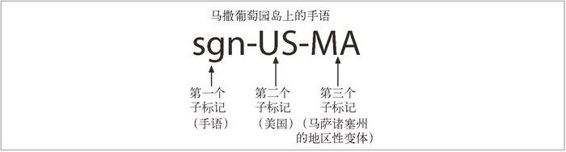

16.4 语言标记与 HTTP
语言标记是命名口语的标准化字符串短语。
名字需要标准化，不然的话，有些人会把法语文档打上 French 标记，而有些其他人会用 Français，还有些人可能会用 France，更有些懒人可能会用 Fra 甚至是 F。标准化语言标记就可以避免这些混乱。
英语的标记是 en，德语的标记是 de，韩语的标记是 ko，等等。语言标记能够描述语言的地区变种和方言，比如巴西葡萄牙语的标记是 pt-BR、美式英语的标记是 en-US，汉语中的湖南话的标记是 zh-xiang。甚至还有个标准语言标记 i-klingon 是描述克林根语 1 的！
1 科幻名著《星际迷航》（Star Trek）中的外星种族，加州大学伯克利分校的语言学博士马克乌克兰为其发明了一套语言。（译者注）
16.4.1 Content-Language首部
实体的 Content-Language 首部字段描述实体的目标受众语言。如果内容主要是给法语受众的，其 Content-Language 首部字段就将包含：
Content-Language: fr
Content-Language 首部不仅限于文本文档。音频片段、电影以及应用程序都有可能是面向特定语言受众的。任何面向特定语言受众的媒体类型都可以有 Content-Language 首部。在图 16-8 中，音频文件标记为面向纳瓦霍 2（Navajo）听众。
2 美国最大的印地安部落。（译者注）

图 16-8 Content-Language 首部把名为 Rain Song（雨之歌）的音频片段标记为面向纳瓦霍听众
如果内容是面向多种语言受众的，可以列出多种语言。就像在 HTTP 规范中建议的，一份同时用英语和毛利语写的“Treaty of Waitangi”3（怀唐伊条约）译稿，可以这样描述：
Content-Language: mi, en
3 英国政府与新西兰毛利酋长们在 1840 年签署的条约，是新西兰的“建国文献”。（译者注）
不过，不能仅根据有多种语言在实体中出现就认为它是面向多种语言受众的。为初学者编写的语言入门教材，比如“A First Lesson in Latin”（拉丁语第一课），显然是为英语受众准备的，应当只用 en 来描述。
16.4.2 Accept-Language首部
我们绝大多数人至少懂一种语言。HTTP 允许我们把语言方面的限制和优先选择都发送给网站服务器。如果网站服务器有以多种语言表示的资源版本，它就能把内容用我们最优选的语言表示出来。4
4 服务器也可以根据 Accept-Language 首部生成适合用户语言的动态内容，或据此选择图像，或选择适合目标语言的商业促销等。
这里有个例子，客户端请求西班牙语内容：
Accept-Language: es
可以在 Accept-Language 首部中放入多个语言标记以枚举所支持的全部语言及其优先顺序（从左到右）。这里有个例子，客户端首选英语，但也接受瑞士德语（标准语言标记是 de-CH）或其他德语变种（标记是 de）：
Accept-Language: en, de-CH, de
客户端使用 Accept-Language 首部和 Accept-Charset 首部请求可以理解的内容。第 17 章将研究这些机制的细节。
16.4.3 语言标记的类型
在 RFC 3066，“Tags for the Identification of Languages”（标识语言的标记）中记录了语言标记的标准化语法。可以用语言标记来表示：
一般的语言分类（比如 es 代表西班牙语）；
特定国家的语言（比如 en-GB 代表英国英语）；
语言的方言（比如 no-bok 指挪威的书面语）；
地区性的语言（比如 sgn-US-MA 代表美国马撒葡萄园岛上的手语）；
标准化的非变种语言（比如 i-navajo）；
非标准的语言（比如 x-snowboarder-slang5）。
5 描述由“酷爱滑雪者们”（shredders）使用的一种俚语。（译者注）
16.4.4 子标记
语言标记有一个或多个部分，用连字号分隔，称为子标记：
第一个子标记称为主子标记，其值是标准化的；
第二个子标记是可选的，遵循它自己的命名标准；
其他尾随的子标记都是未注册的。
主子标记中只能含有字母（A ～ Z）。其后的子标记可以含有字母和数字，长度最多 8 个字符。图 16-9 中给出了一个示例。

图 16-9 语言标记被分隔为子标记
16.4.5 大小写
所有的标记都是不区分大小写的，也就是说，标记 en 和 eN 是等价的。但是，习惯上用全小写来表示一般的语言，而用全大写来表示特定的国家。例如，fr 表示所有分类为法语的语言，而 FR 表示国家法国 6。
6 这种惯用法是 ISO 标准 3166 中推荐的。
16.4.6 IANA语言标记注册
第一个和第二个语言子标记的值由各种标准文档以及相关的维护组织定义。IANA7依据 RFC 3066 中概括的规则来管理标准的语言标记列表。
7 参见 http://www.iana.org 和 RFC 2860。
如果语言标记由标准的国家和语言值组成，标记就不需要专门注册。只有那些无法用标准的国家和语言值构成的语言标记才需要专门向 IANA 注册 8。下面几节概括了 RFC 3066 中关于第一子标记和第二子标记的标准。
8 编写本书的时候，IANA 中只显式注册了 21 种语言标记，包括汉语中的广东话（标记是 zh-yue）、新挪威语（标记是 no-nyn）、卢森堡语（标记是 i-lux）以及克林根语（语言标记是 i-klingon）。在因特网上使用的其余数百种口语的标记均由标准的组件构成。
16.4.7 第一个子标记——名字空间
第一个子标记通常是标准化的语言记号，选自 ISO 639 中的语言标准集合。不过也可以用字母 i 来标识在 IANA 中注册的名字，或用 x 表示私有的或者扩展的名字。下面是各种规则。
如果第一个子标记含有：
2 个字符，那就是来自 ISO 6399 和 639-1 标准的语言代码；
9 参见 ISO 标准 639，“Codes for the representation of names of languages—Part2：Alpha-3code”（表示语言名字的代码——第 2 部分：Alpha-3 代码）。
3 个字符，那就是来自 ISO 639-210 标准及其扩展的语言代码；
10 参见 ISO 639-2，“Codes for the representation of names of languages—Part 2: Alpha-3 code”（表示语言名字的代码——第 2 部分：Alpha-3 代码）。
字母 i，该语言标记是在 IANA 显式注册的；
字母 x，该语言标记是私有的、非标准的，或扩展的子标记。
附录 G 中总结了 ISO 639 和 639-2 中的名字。表 16-5 中给出了一些示例。
表16-5 ISO 639和ISO 639-2中的语言代码示例
| 语 言 | ISO 639 | ISO 639-2 |
|---|---|---|
| 阿拉伯语 | ar | ara |
| 汉语 | zh | chi/zho |
| 荷兰语 | nl | dut/nla |
| 英语 | en | eng |
| 法语 | fr | fra/fre |
| 德语 | de | deu/ger |
| 现代希腊语 | el | ell/gre |
| 希伯来语 | he | heb |
| 意大利语 | it | ita |
| 日语 | ja | jpn |
| 韩语 | ko | kor |
| 挪威语 | no | nor |
| 俄语 | ru | rus |
| 西班牙语 | es | esl/spa |
| 瑞典语 | sv | sve/swe |
| 土耳其语 | tr | tur |
16.4.8 第二个子标记——名字空间
第二个子标记通常是标准化的国家记号，选自 ISO 3166 中的国家代码和地区标准集合。不过也可以是在 IANA 注册过的其他字符串。下面是各种规则。
如果第二个子标记含有：
2 个字符，那就是 ISO 316611 中定义的国家 / 地区；
11 国家代码 AA、QM-QZ、XA-XZ 以及 ZZ 是在 ISO 3166 中保留的作为用户分配的代码。一定不能用这些值来构造语言标记。
3~8 个字符，可能是在 IANA 中注册的值；
单个字符，这是非法的情况。
表 16-6 中列出了 ISO 3166 中的部分国家代码。附录 G 中列出了完整的国家代码。
表16-6 ISO 3166中的国家代码示例
| 国 家 | 代 码 |
|---|---|
| 巴西 | BR |
| 加拿大 | CA |
| 中国 | CN |
| 法国 | FR |
| 德国 | DE |
| 梵蒂冈 | VA |
| 印度 | IN |
| 意大利 | IT |
| 日本 | JP |
| 黎巴嫩 | LB |
| 墨西哥 | MX |
| 巴基斯坦 | PK |
| 俄罗斯联邦 | RU |
| 英国 | GB |
| 美国 | US |
16.4.9 其余子标记——名字空间
除了最长可以到 8 个字符（字母和数字）之外，第三个和其后的子标记没有特殊规则。
16.4.10 配置和语言有关的首选项
可以在浏览器的配置文件中配置和语言有关的首选项。
网景公司的 Navigator 的设置方法是：编辑→首选项→语言，而微软公司的 Internet Explorer 浏览器的设置方法是：工具→ Internet 选项→语言。
16.4.11 语言标记参考表
为便于使用，附录 G 中给出了语言标记的参考表。
表 G-1 列出了在 IANA 注册的语言标记。
表 G-2 列出了 ISO 639 中的语言代码。
表 G-3 列出了 ISO 3166 中的国家代码。